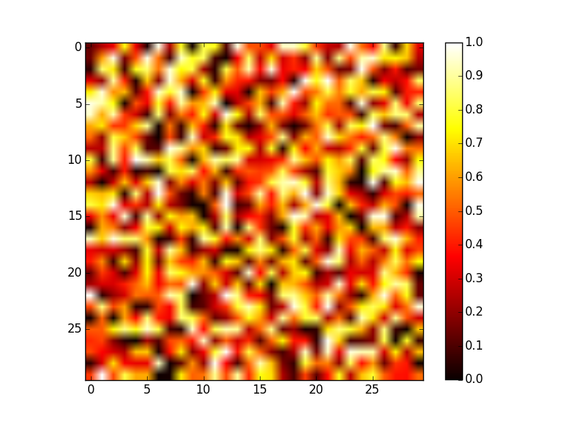

NumPy: 创建与操作数值数据¶
作者：Emmanuelle Gouillart, Didrik Pinte, Gael Varoquaux, and Pauli Virtanen
译者：ChzRuan
本章对Python数值计算的高性能核心工具 — NumPy模块进行综述。
NumPy的数组(array)对象¶
NumPy及NumPy数组(array) 是啥？¶
NumPy 数组(array)¶
- Python自带：
- 高级数值对象：整数，浮点数
- 容器：列表(list, 快速插入/追加元素)，字典(dictionary, 快速检索)
- NumPy提供：
- 多维数组
- 更接近硬件端（高效）
- 为科学计算设计（便利）
- 面向数组的计算思想
>>> import numpy as np
>>> a = np.array([0, 1, 2, 3])
>>> a
array([0, 1, 2, 3])
- 一个NumPy数组的内容可以是：
- 实验/仿真数据（关于时间的分立序列）
- 测量装置的采样信号。例：声波
- 图片（灰度图或色图）的像素点
- 在不同的X-Y-Z位置观测的3-D数据。例：核磁共振扫描
- ...
NumPy数组的优点：它的内存管理更高效，因此数值计算速度更快。
In [1]: L = range(1000)
In [2]: %timeit [i**2 for i in L]
1000 loops, best of 3 : 403 us per loops
In [3]: a = np.arange(1000)
In [4]: %timeit a**2
100000 loops, best of 3 : 12.7 us per loops
NumPy帮助文档¶
- 网址： http://docs.scipy.org/
- 交互式帮助：
In [5]: np.array? String Form:<built-in function array> Docstring: array(object, dtype=None, copy=True, order=None, subok=False, ndmin=0, ...
- 查阅帮助信息：
>>> np.lookfor('create array') Search results for 'create array' ---------------------------------- numpy.array Create an array numpy.memmap Create a memory-map to an array stored in a *binary* file on a diskIn [6]: np.con*? np.concatenate np.conj np.conjugate np.convolve
导入名的惯例¶
NumPy模块导入的惯例是：
>>> import numpy as np
创建数组(np.array)¶
手动创建数组¶
- 一维：
>>> a = np.array([0, 1, 2, 3]) >>> a array([0, 1, 2, 3]) >>> a.ndim 1 >>> a.shape (4,) >>> len(a) 4
- 二维，三维，…：
>>> b = np.array([[0, 1, 2], [3, 4, 5]]) # 2 x 3 数组 >>> b array([[0, 1, 2], [3, 4, 5]]) >>> b.ndim 2 >>> b.shape (2, 3) >>> len(b) # 返回数组b的第一维长度 2 >>> c = np.array([[[1], [2]], [[3], [4]]]) >>> c array([[[1], [2]], [[3]], [4]]]) >>> c.shape (2, 2, 1)练习：简单数组
- 创建一个简单的二维数组。首先照着上边的例子重复一下，And then create your own: how about odd numbers counting backwards on the first row, and even numbers on the second?
- 将 len() 和
numpy.shape()函数作用于上面的数组。这两个函数有什么联系？它们和ndim方法有什么联系？
函数创建数组¶
实践中很少像上面那样逐个输入数组元素... 通常使用内置函数自动创建各种数组。
- 均匀分布：
..sourcecode:: ipython
>>> a = np.arange(10) # 0 .. n-1 (!) >>> a array([0, 1, 2, 3, 4, 5, 6, 7, 8, 9]) >>> b = np.arange(1, 9, 2) # start, end (数组不含end), step >>> b array([1, 3, 5, 7])
- 或者指定数组元素个数：
..sourcecode:: ipython
>>> c = np.linspace(0, 1, 6) # start（起始值）, end（终止值）, num-points（数组元素个数） >>> c array([ 0. , 0.2, 0.4, 0.6, 0.8, 1. ]) >>> d = np.linspace(0, 1, 5, endpoint=False) # endpoint=False: 数组不含终止值1 >>> d array([ 0. , 0.2, 0.4, 0.6, 0.8])
- 常用数组：
>>> a = np.ones((3, 3)) # 注意: (3, 3) 是一个元组(tuple) >>> a array([[ 1., 1., 1.], [ 1., 1., 1.], [ 1., 1., 1.]]) >>> b = np.zeros((2, 2)) >>> b array([[ 0., 0.], [ 0., 0.]]) >>> c = np.eye(3) >>> c array([[ 1., 0., 0.], [ 0., 1., 0.], [ 0., 0., 1.]]) >>> d = np.diag(np.array([1, 2, 3, 4])) >>> d array([[1, 0, 0, 0], [0, 2, 0, 0], [0, 0, 3, 0], [0, 0, 0, 4]])
np.random: 随机数组（使用Mersenne旋转算法生成随机数）>>> a = np.random.rand(4) # 生成在区间 [0, 1] 均匀分布的随机数组 >>> a array([ 0.95799151, 0.14222247, 0.08777354, 0.51887998]) >>> b = np.random.randn(4) # Guass分布（正态分布） >>> b array([ 0.37544699, -0.11425369, -0.47616538, 1.79664113]) >>> np.random.seed(1234) # 设置随机数种子练习：用函数创建数组
- 使用上面的
arange, linspace, ones, zeros, eye以及diag函数。- 创建各种随机数组
- 设置不同的随机数种子创建随机数组
- 查阅
np.empty的帮助文档，它是干啥的？什么时候能用到？
基本数据类型¶
我们观察到有时候数组元素后面会多一个小数点（比如2.），这与数组的数据类型有关：
>>> a = np.array([1, 2, 3])
>>> a.dtype
dtype('int64')
>>> b = np.array([1., 2., 3.])
>>> b.dtype
dtype('float64')
采用不同的数据类型可以使数据在内存中更加紧凑地存储，但对大部分场合而言浮点数就够用了。注意在上面的例子里，NumPy自动根据输入的数据类型钦定了数组的数据类型。
数组的类型可以在输入时指定：
>>> c = np.array([1, 2, 3], dtype=float)
>>> c.dtype
dtype('float64')
默认的 数据类型是浮点数：
>>> a = np.ones((3, 3))
>>> a.dtype
dtype('float64')
其他类型有：
复数
>>> d = np.array([1+2j, 3+4j, 5+6*1j]) >>> d.dtype dtype('complex128')Bool型(逻辑型)
>>> e = np.array([True, False, False, True]) >>> e.dtype dtype('bool')字符串
>>> f = np.array(['Bonjour', 'Hello', 'Hallo',]) >>> f.dtype # <--- strings containing max. 7 letters dtype('S7')
- 还有：
int32int64uint32uint64
数据的基本可视化¶
在初步学习了数组之后，我们考虑怎样将数据可视化。
从打开IPython开始：
$ ipython
或IPython notebook:
$ ipython notebook
IPython启动后就可以进行交互式绘图：
>>> %matplotlib
或者在notebook里绘图：
>>> matplotlib inline
注意inline参数对notebook很重要，只有这样才能将绘图结果在notebook中显示，而非显示在新窗口。
Matplotlib 是一个二维绘图的Python模块，可以像之前那样导入此模块的函数：
>>> import matplotlib.pyplot as plt # 惯例的导入方式
然后绘制并输出图片（注意，如果没有用 %matplotlib 命令进入交互绘图的话只能像下面这样完整地调用函数）：
>>> plt.plot(x, y) # 绘制直线
>>> plt.show() # <-- 输出图片（在交互绘图模式下不用此语句，图片自动输出）
如果已经用 %matplotlib 语句进入交互绘图模式，那么用下面的语句就行了：
>>> plot(x, y) # 绘制直线
一维数组绘图：
>>> x = np.linspace(0, 3, 20) >>> y = np.linspace(0, 9, 20) >>> plt.plot(x, y) # line plot [<matplotlib.lines.Line2D object at ...>] >>> plt.plot(x, y, 'o') # dot plot [<matplotlib.lines.Line2D object at ...>]
更多可视化内容见： matplotlib chapter
练习：简单可视化
- Plot some simple arrays: a cosine as a function of time and a 2D matrix.
- 尝试用
gray颜色映射绘制上面的二维数组。